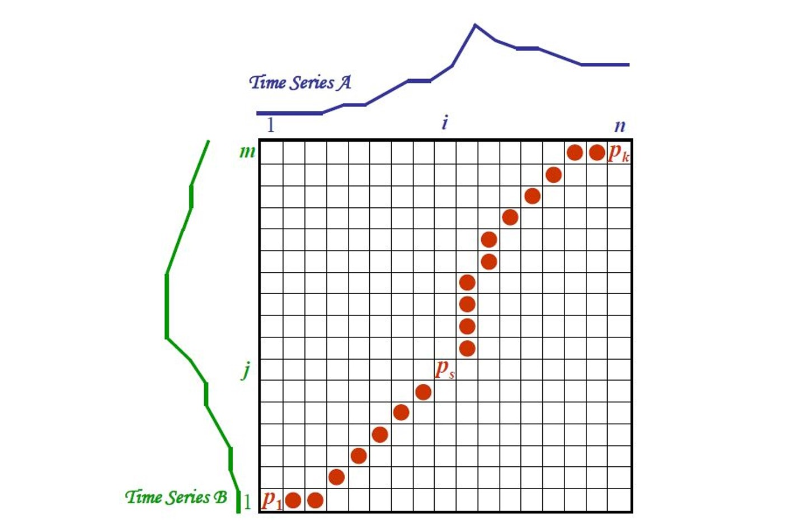
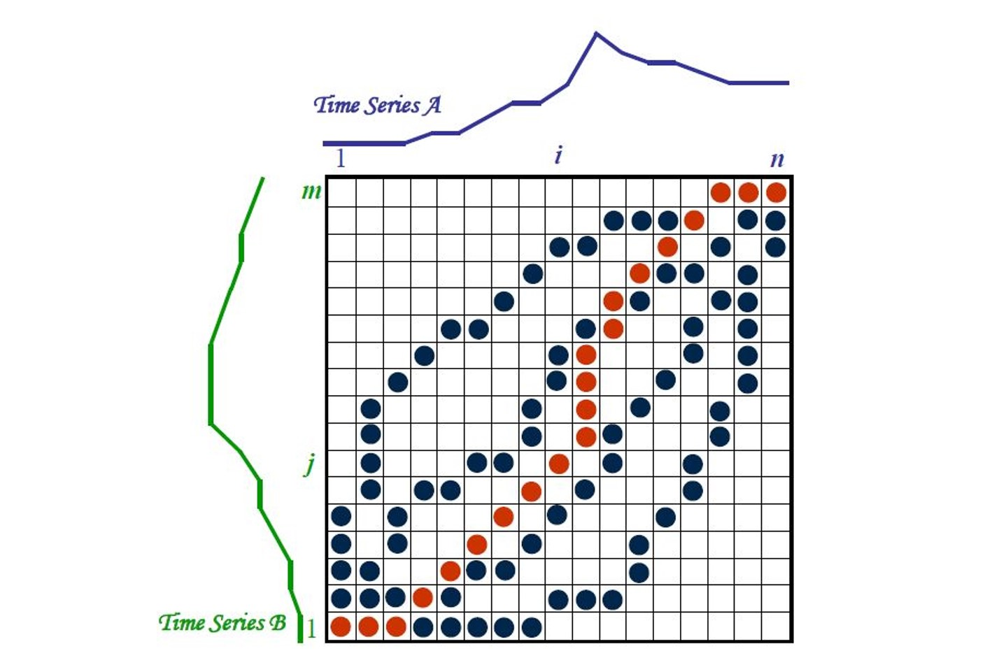
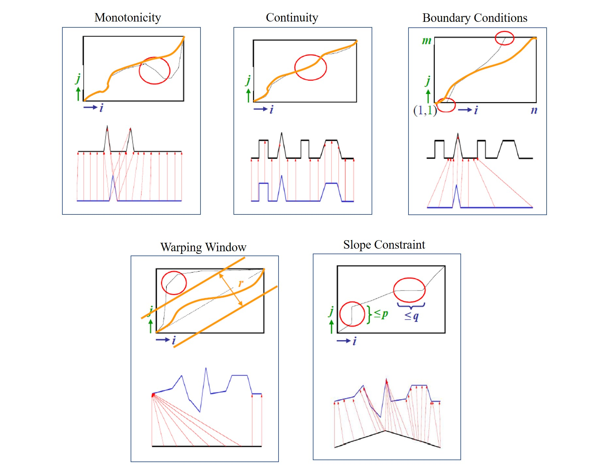
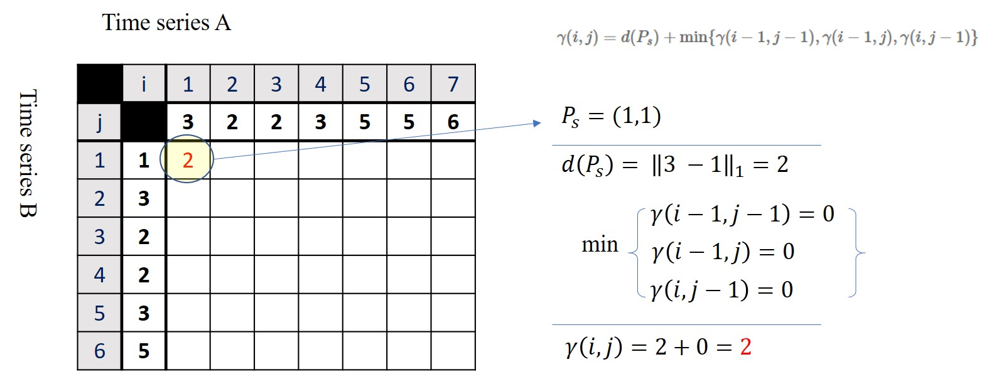
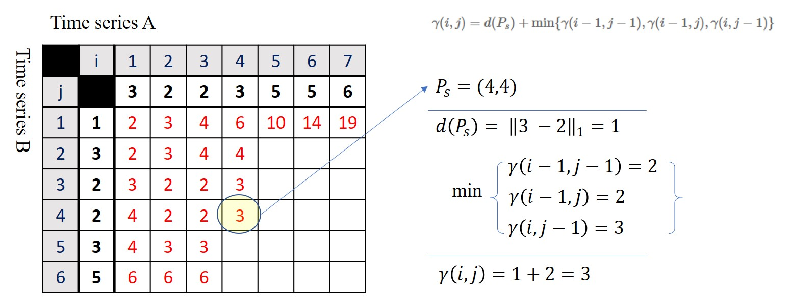
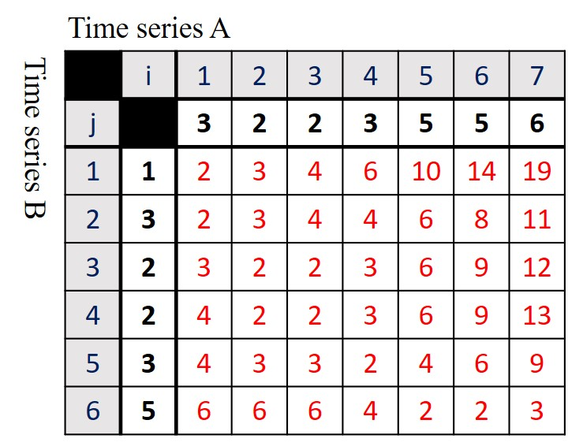
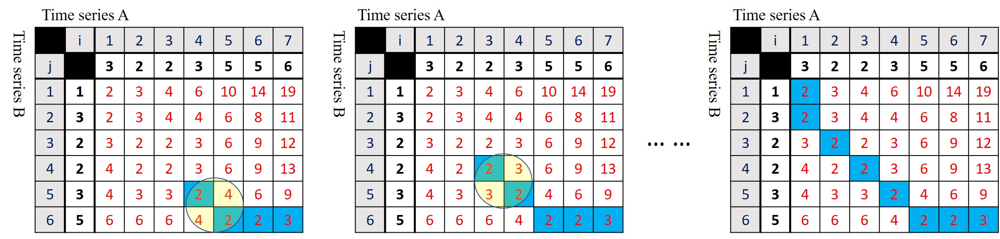

Dynamic Time Warping
Table of Content
Dynamic Time Warping (DTW) is a non-linear similarity computation method that dynamically compute the similarity between time series data when the time indices between data points from time series A and time series B do not match. Consider the two time series sequences (time series A in green, and time series B in blue) shown in Figure below, these two sequences do not line up in time axis. However, both of them have some similarities in terms of their component shapes. If traditional distance metrics (e.g., Euclidean distance, Manhattan distance, etc.) are used to compute the distance between the $$i$$th point of time series A with the $$i$$th point of time series B, it will most probably produce a poor similarity score. If a non-linear mapping can be used to match the similar shape of two time series even though these two time series sequences are out of phase in the time axis, it will produce a more intuitive similarity measure. This can be done by warping the time axis of one sequences to align the time axis.
Warping Function⚓︎
DTW uses warping function to find the best alignment between two time series sequences. The objective is to find the path through the grids
$$ P = P_1, P_2, ..., P_s, ..., P_k $$
$$ P_s = (i, j) $$
which minimizes the total distance between them.

Let $$A$$ and $$B$$ be time series A and B, respectively, we can compute the time normalized distance between these two time series:
$$ D(A, B) = \frac{\sum_{s=1}^k d(P_s) w_s}{\sum_{s=1}^k w_s} $$
where $$d(P_s) = d(v_i, v_j)$$ is the distance between value at $$i$$th point $$v_i$$ and value at $$j$$th point $$v_j$$, and $$w_s$$ is the weight coefficient.

Considering the Figure above, there are many possible warping paths through the grid. That's being said, to search for an optimum path, i.e.,
$$ P_o = arg\min_P (D(A, B)) $$
can be extremely hard when the grid size is big.
Furthermore, if a single point of time series A can map onto a large subsection of time series B, it will lead to an unintuitive alignment. Over the decade, a few constraints have been imposed on the warping function:
1. Monotonicity⚓︎
Monotonicity ensures that the warping path does not go back in time. Given $$P_s = (i, j)$$ and $$P_{s-1} = (i', j')$$, $$i \leq i'$$ and $$j \leq j'$$ forces the points in $$P$$ to be monotonically spaced in time
2. Continuity⚓︎
Continuity ensures that the warping path does not jump in time. Given $$P_s = (i, j)$$ and $$P_{s-1} = (i', j')$$, $$i - i' \leq 1$$ and $$j - j' \leq 1$$ restricts the allowable steps in the warping path to adjacent cells.
3. Boundary Conditions⚓︎
The boundary of the warping path states that the part should start at $$P_1 = (1, 1)$$ and end at $$P_s = (m, n)$$, i.e., the warping path needs to start and finish in diagonally opposite corner of the grid. This is important to make sure the warping path does not consider only partial of the sequence.
4. Warping Window⚓︎
Let $$r>0$$ be the length of warping window, $$|i - j| \leq r$$ restricts allowable grid points for the warping path. The warping window ensures that the warping path does not wander too far away from the diagonal. This guarantees that the alignment will not get stuck at similar features.
5. Slope Constraint⚓︎
Slope constraint ensures that the warping path is neither too steep or too shallow. Let $$q$$ and $$p$$ be the number of steps in the x-direction and y-direction given the grid, then $$\frac{j_{p} - j_{0}}{i_{p} - i_{0}} \leq p$$ and $$\frac{i_{q} - i_{0}}{j_{q} - j_{0}} \leq q$$. That is, after $$q$$ steps in x one must step in y and vice versa.

Dynamic Programming⚓︎
Dynamic Programming is an efficient method to find the warping path. In general, dynamic programming evaluate the cumulative distance $$\gamma(i, j)$$ based on the distance $d(P_s)$ at the current cell and the minimum of the cumulative distances of the adjacent elements. Mathematically,
$$ \gamma(i, j) = d(P_s) + \min {\gamma(i-1, j-1), \gamma(i-1, j), \gamma(i, j-1)} $$
where $$d(P_s) = d(v_i, v_j)$$ can be calculated by taking the absolute difference between value at $$i$$th point and value at $$j$$point, i.e., $$d(v_i, v_j) = |v_i - v_j|$$
Example⚓︎
Suppose that we have two time series A and B as follows:
$$ A = [ 3, 2, 2, 3, 5, 5, 6 ] $$
$$ B = [ 1, 3, 2, 2, 3, 5 ] $$
First, let's consider point $$P_s = (1,1)$$, i.e., $$i=1$$ and $$j=1$$, the value at $$i=1$$ is $$v(i=1) = 3$$ and the value at $$j=1$$ is $$v(j=1) = 1$$. Hence, the absolute distance at point $$P_s = (1,1)$$ is $$d(P_s) = |3-1| = 2$$. Since the values at the cell above, left and diagonally above $$P_s$$ are all empty, hence, $$\min {\gamma(i-1, j-1), \gamma(i-1, j), \gamma(i, j-1)} = 0$$. The cumulative distance $$\gamma(i=1, j=1)$$ will be 2, as shown in Figure below.

Let's consider another point $$P_s = (4,4)$$, here we have $$v(i=4) = 3$$ and $$v(j=4) = 2$$. Hence, the absolute distance at point $$P_s = (4,4)$$ is $$d(P_s) = |3-2| = 1$$. The values at the adjacent cells (above, left and diagonally above ) are 3, 2 and 2. By taking the minimum value, we have 2. So, the cumulative distance $$\gamma(i=4, j=4)$$ will be 3, as shown in Figure below.

Figure below shows the final grid (or matrix) with all the value computed.

The warping path can be obtained by backtracking from the end point to the beginning point as shown below.

Implementation⚓︎
Here we will walkthrough a simple implementation of above example in Python.
First, define the two time series A and B
A = np.array([3,2,2,3,5,5,6])
B = np.array([1,3,2,2,3,5])
Initialize a dtw matrix based on the length of A and B, i.e., length of B define the number of rows, and length of A define the number of columns.
dtw_mat = np.zeros((len(B), len(A)))
print(dtw_mat)
output:
[[0. 0. 0. 0. 0. 0. 0.]
[0. 0. 0. 0. 0. 0. 0.]
[0. 0. 0. 0. 0. 0. 0.]
[0. 0. 0. 0. 0. 0. 0.]
[0. 0. 0. 0. 0. 0. 0.]
[0. 0. 0. 0. 0. 0. 0.]]
Now, we need to loop through all element in the dtw matrix, and compute the cumulative distance.
# define the absolute distance function
d = lambda x, y: np.abs(x - y)
for i in range(len(B)):
for j in range(len(A)):
if i == 0 and j == 0:
dtw_mat[i, j] = d(B[i], A[j])
else:
if i == 0 and j > 0:
choice = dtw_mat[i, j-1]
elif i > 0 and j == 0:
choice = dtw_mat[i-1, j]
else:
choice = [dtw_mat[i-1, j], dtw_mat[i, j-1], dtw_mat[i-1, j-1]]
dtw_mat[i, j] = d(B[i], A[j]) + np.min(choice)
print(dtw_mat)
output:
[[ 2. 3. 4. 6. 10. 14. 19.]
[ 2. 3. 4. 4. 6. 8. 11.]
[ 3. 2. 2. 3. 6. 9. 12.]
[ 4. 2. 2. 3. 6. 9. 13.]
[ 4. 3. 3. 2. 4. 6. 9.]
[ 6. 6. 6. 4. 2. 2. 3.]]
We can find the warping path by backtracking.
path = [[len(B)-1, len(A)-1]]
while(True):
print(path)
i, j = path[-1][0], path[-1][1]
if i == 0 and j == 0:
break
elif i == 0 and j > 0:
path.append([i, j-1])
elif i > 0 and j == 0:
path.append([i-1, j])
else:
choice = [dtw_mat[i-1, j], dtw_mat[i, j-1], dtw_mat[i-1, j-1]]
ind = [[i-1, j], [i, j-1], [i-1, j-1]]
k = np.argmin(choice)
path.append(ind[k])
warp = np.zeros((len(B), len(A)))
for p in path:
warp[p[0], p[1]] = 1
print(warp)
output:
[[1. 0. 0. 0. 0. 0. 0.]
[1. 0. 0. 0. 0. 0. 0.]
[0. 1. 1. 0. 0. 0. 0.]
[0. 0. 1. 0. 0. 0. 0.]
[0. 0. 0. 1. 0. 0. 0.]
[0. 0. 0. 0. 1. 1. 1.]]
Then, we can calculate the normalized distance between time series A and time series B. Assume that all the point shares equal weight, i.e., $$w_s=1$$ for all $$P_s$$, then $$D(A,B)$$ can be computed as follows:
$$ D(A,B) = \frac{1}{k} \sum_{s = 1}^k d(P_s) $$
D = np.sum(warp * dtw_mat)/len(path)
print(f'Normalized Distance: {D:2f}')
Normalized Distance: 2.111111
Wrap Up the Implementation with function⚓︎
We can also define a few functions to handle the DTW matrix computation, get the warping path and also compute the normalized distance.
def computed_dtwMat(A, B):
d = lambda x, y: np.abs(x - y)
for i in range(len(B)):
for j in range(len(A)):
if i == 0 and j == 0:
dtw_mat[i, j] = d(B[i], A[j])
else:
if i == 0 and j > 0:
choice = dtw_mat[i, j-1]
elif i > 0 and j == 0:
choice = dtw_mat[i-1, j]
else:
choice = [dtw_mat[i-1, j], dtw_mat[i, j-1], dtw_mat[i-1, j-1]]
dtw_mat[i, j] = d(B[i], A[j]) + np.min(choice)
return dtw_mat
We can call the above function by providing time series A and time series B as input arguments, and it will return the dtw_mat.
dtw_mat = computed_dtwMat(A, B)
print(dtw_mat)
output:
[[ 2. 3. 4. 6. 10. 14. 19.]
[ 2. 3. 4. 4. 6. 8. 11.]
[ 3. 2. 2. 3. 6. 9. 12.]
[ 4. 2. 2. 3. 6. 9. 13.]
[ 4. 3. 3. 2. 4. 6. 9.]
[ 6. 6. 6. 4. 2. 2. 3.]]
We can define a function to get the warping path.
def get_warpingPath(A, B):
dtw_mat = computed_dtwMat(A, B)
path = [[len(B)-1, len(A)-1]]
while(True):
i, j = path[-1][0], path[-1][1]
if i == 0 and j == 0:
break
elif i == 0 and j > 0:
path.append([i, j-1])
elif i > 0 and j == 0:
path.append([i-1, j])
else:
choice = [dtw_mat[i-1, j], dtw_mat[i, j-1], dtw_mat[i-1, j-1]]
ind = [[i-1, j], [i, j-1], [i-1, j-1]]
k = np.argmin(choice)
path.append(ind[k])
warp = np.zeros((len(B), len(A)))
for p in path:
warp[p[0], p[1]] = 1
```python
path, warp, dtw_matrix = get_warpingPath(A, B)
print(warp)
print(dtw_mat)
output:
[[1. 0. 0. 0. 0. 0. 0.]
[1. 0. 0. 0. 0. 0. 0.]
[0. 1. 1. 0. 0. 0. 0.]
[0. 0. 1. 0. 0. 0. 0.]
[0. 0. 0. 1. 0. 0. 0.]
[0. 0. 0. 0. 1. 1. 1.]]
[[ 2. 3. 4. 6. 10. 14. 19.]
[ 2. 3. 4. 4. 6. 8. 11.]
[ 3. 2. 2. 3. 6. 9. 12.]
[ 4. 2. 2. 3. 6. 9. 13.]
[ 4. 3. 3. 2. 4. 6. 9.]
[ 6. 6. 6. 4. 2. 2. 3.]]
Finally, we can have a function to compute the normalized distance.
def normalized_dist(A, B):
path, warp, dtw_matrix = get_warpingPath(A, B)
D = np.sum(warp * dtw_mat)/len(path)
return D
By calling the function normalized_dist, it will return us the normalized distance between time series A and time series B.
D = normalized_dist(A, B)
print(f'Normalized Distance: {D:2f}')
Normalized Distance: 2.111111
Summary⚓︎
A python script containing all the above functions is provided here You can also refer to the example notebook here on how to apply those functions.
There is also a useful dtw-python package provided by Toni dot Giorgino. You can visit his site for more information about dtw-python package.
You can also install the package by issuing the following command: pip install dtw-python.
DTW is available in Matlab through the Signal Processing Toolbox. For more information about using DTW with Matlab, check out the Matlab documentation about DTW here.